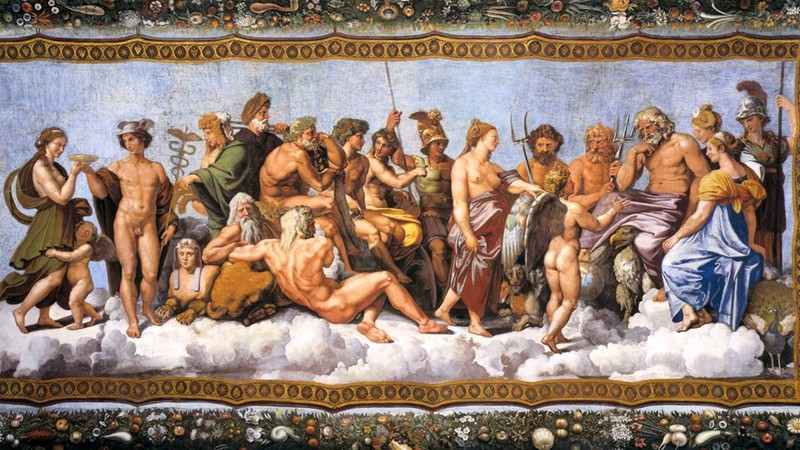
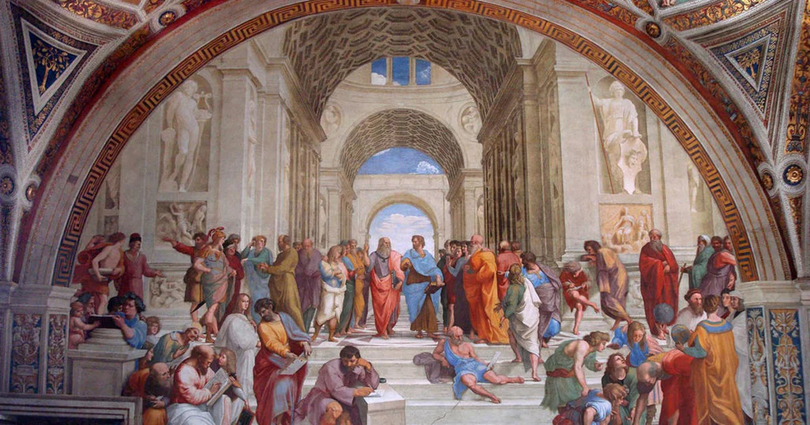

Grécia Antiga
A Grécia Antiga, berço da civilização ocidental, é uma das mais fascinantes e influentes culturas da história humana. Localizada no sudeste da Europa, esta civilização floresceu entre os séculos VIII a.C. e VI d.C., deixando um legado duradouro nas áreas de filosofia, arte, política, ciência e literatura. Composta por uma vasta rede de cidades-estado independentes, como Atenas, Esparta e Corinto, a Grécia Antiga é conhecida por suas contribuições essenciais para o desenvolvimento da democracia, o conceito de cidadania e a importância do pensamento crítico.
Pré Homérico (2000 a.C - 1200 a.C)
Foi o período entre 2000 a.C até 1200 a.C que correspondeu a formação do povo grego. Os povos cretense chegaram na ilha de Creta (Esses civilizações da ilha de Creta entraram em decadência por conta de desastres ambientais) e posteriormente outra civilização chamada micênicos absorveu os cretenses no local. Além de outras grandes cidades que tinham ao redor como Tróia e micenás. Sua economia era a base do comércio, além de serem ótimos em cerâmica e serem politeístas, ou seja, acreditavam em vários deuses da mitologia grega.
Homérico (1150 a.C - 800 a.C)
O violento povo Dório invadiu as cidades e expulsaram os micênicos para o interior da Península Balcânica e fundaram Genos. Lá eles tinham uma base patriarcal, onde foi inventada a palavra pater, que derivou de paternidade. Fratrias (alianças entre famílias) foram feitas para a expansão da terra, porém as terras férteis eram escassas e caras, e quem tinham essas terras eram chamados de Eupátridas, as pessoas trabalhavam para os Eupátridas caso se endivdassem com eles se tornavam seus escravos.
Os líderes políticos eram os Aristrocatas que para resolver o problema de escassez de terras, decidiram fazer exploração pelo mar mediterrâneo.
Arcaico (800 a.C - 500 a.C)
Foi a época onde se criou as Pólis (cidades-estados), cidades que se auto-governam caracterizadas pela autonomia política, economia e militar. Essas Polis não se juntavam por causa do isolamento geográfico que os vales causavam. Essas cidades-estados tinham a mesma base cultural e relogiosa, e as que mais se destacavam eram Atenas e Esparta. Atenas se desenvolveu próximo ao mar e sua economia dependia do comércio marítimo. Teve como inovação política a criação da democracia, DEMO significa povo enquanto CRACIA referece ao governo, o Governo do Povo foi criado para tirar o poder dos Eupátridas, pois varias classes sociais importantes queriam participar da política. Porém pela cultura machista da época, apenas homens livres com mais de 18 anos e nascidos em Atenas podiam votar.

Esparta, descendentes dos Dórios, tinham como economia o cultivo de cereais, pastagem e criação de animais, além de investir em uma rígida educação militar, tendo assim uma política oligarquica com dois reis no poder. Apenas os Espartanos Aristrocatas militares eram considerados cidadãos, abaixo vinha periecos constituídos pelos comerciantes e artesãos, mais embaixo tinham os hilotas, que eram servos do estado.
Clássico (510 a.C - 323 a.C)
Atenas se torna uma Polis Imperialista com tanto poder financeiro, militar e geográfico que houve a chamada Guerra Médica (490-448 a.C), onde acontece a invasão Persa para conquistar o mediterrâneo. Atenas tinha um forte poder marítimo e derrotou as tropas do Persa Dario, o próximo a assumir Xerxes, que resolveu atacar as terras de Esparta, os Espartanos tiveram vantagem geográfica venceram as batalhas contra Persa.
Nessa época Atenas cria a Liga de Delos, com o objetivo de barrar o avanço Persa e preservar a cultura grega, dessa forma extinguindo Persa.
Nessa época o governador Péricles teve grandes desenvolvimentos culturais e econômicos em Atenas, além de controlar a marinha da liga. Mas quem não gostou de todo esse progresso Ateniense foi Esparta, que criaram a Liga do Pelotoneso para derrubar Atenas, chegando até a se aliar com os Persas. Após 30 anos de conflito, Esparta ganha a guerra e vira a potência da Grécia, oque gera varios conflitos com outros Polis e enfraquece os Gregos. Esse enfraquecimento foi uma oportunidade para os Macedônios invadirem a Grécia por ordem do rei Felipe II, que viria a ser pai do Alexandre O Grande.
Helenístico (323 a.C - 32 a.C)
Grécia passa a ser um Império Macedônico, e as Pólis perdem suas autonomia. Alexandre Magno conquistou várias terras e tinha tolerância cultural sobre as terras conquistadas e passava a cultura grega adiante, criando a biblioteca de Alexandria no Mediterrâneo do Egito. Alexandre teve um reinado de 13 anos e faleceu aos 32, sem deixar sussessor para seu trono, houve fragmentação na Grécia e com esse enfraquecimento teve a invasão dos Romanos.